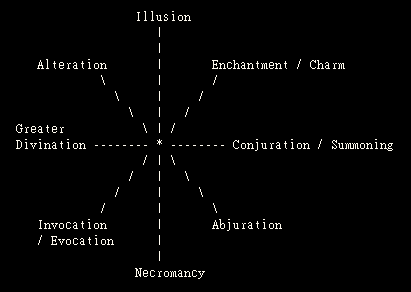

一般而言，魔法施展者都被称为巫师 (Mage)，但是在魔法的领域
中，有一些专门的学派 (school)，法术的学习者，可以特别专攻某
一系的法术，以成为专门学派的法师。
在已知的法术领域中，有八个主要的学派，它们的关系与名称如下
图。

从图中可看出，每一学派都与二或三个学派相对立，例如：Illusion
学派便与 Abjuration, Necromancy 和 Invocation/Evocation 相对
立。简而言之，每一学派的法师，对于本身学派的法术系特别擅长，
并且有许多相关能力的加强，但对于对立学派的法术系在施展上却特别
困难，通常会因为思考方式的不同等因素，而完全无法习得。
以下对这八大学派一一简介。
学派简介:
I. Abjuration:
此学派擅于防护类型的魔法，包括防护特定武器或生物的攻击、
驱走敌人等。此系法术主要施展以削减或去除伤害，而非治愈伤害。
此学派法师，通常被称为 Abjurer。
只有人类才能成为 Abjurer。精灵、半精灵与 gnome 对魔法都有
些自然抗力，使他们无法专精此系法术。欲成为 Abjurer，还需要高
程度的智慧 (Wisdom)。
理想法术:
低等级有 dispel magic, protection from evil, protection from
normal missiles 等。
中等级有 fire trap, avoidance, anti-magic shell 等。
高等级有 spell turning, serten's spell immunity 等。
Abjurer 无法学习 Alteration 和 Illusion 学派法术。
II. Alteration
此学派法术能灌输魔法能源，使物体、生物或某些状态，造成直接且特
殊的改变。例如，改变物体的外型、重量、位置或甚至生理健康状态。此
学派法师，被称为 Transmuter。
只有具人类血统者能成为 Transmuter，即人类与半精灵。此系法术在施
展时需要灵活的肢体动作，因此还需要高度的敏捷天资 (Dex)。
理想法术:
低等级 burning hand, shocking grasp, fly 等。
中等级 polymorph self, polymorph other, death fog 等。
高等级 shape change, time stop, polymorph any object 等。
Transmuter 无法学习 Abjuration 和 Necromancy 学派法术。
III. Conjuration / Summoning
此学派涵盖两类型法术，都是将物质自他处召来。Conjuration 系法术
乃产生各种非生命物质；Summoning 系法术则是将别处的生物召唤至施法
者旁。此学派法师通常被称为 Conjurer。
只有具人类血统者能成为 Conjurer，并且需具有高程度的体质 (Con)。
理想法术:
低等级 Melf's acid arrow, summon swarm, monster summoning I 等。
中等级 conjure elemental, summon shadow 等。
高等级 wish (这是非常强力的法术!)。
Conjurer 无法学习 Greater Divination 和 Invocation / Evocation
学派的法术。
IV. Enchantment / Charm
此学派亦涵盖两类型法术，都是将对象强附上魔法能源，以产生某些效
果。Enchantment 系法术对无生命对象赋予魔法力量；Charm 系法术则在
改变或影响生物的行为。此系法师被称为 Enchanter。
人类、半精灵和精灵都能成为 Enchanter，需具有高程度的魅力 (Cha)。
理想法术:
低等级 sleep, hypnotism, scare 等。
中等级 enchanted weapon, charm monster, hold monster 等。
高等级 antipathy-sympathy, binding, mass charm 等。
Enchanter 不能学习 Invocation / Evocation 和 Necromancy 学派的
法术。
V. Great Divination
此学派的法术主要在于探知神秘或被隐藏的资讯，包括探知特定
物品、生物或状态。甚至是过去、现在或未来的资讯。此学派法师
被称为 Diviner。
人类、精灵和半精灵可成为 Diviner，并需要高度的智慧。
理想法术
低等级 detect magic, read magic, clairvoyance等 (基本上，
lv1 到 lv4 的 Divination 法术是所有学派皆可学的)
中等级 legend lore, true seeing 等
高等级 fore-sight。
Diviner 不能学习 Conjuration / Summoning 学派的法术。
VI. Illusion
此学派的法术能扭曲其他人或生物对现实的知觉。此学派法师被
称为 Illusionist
只有人类和 gnome 能成为 Illusionist，并需要高度的敏捷力。
理想法术
低等级 phantasmal force, ventriloquism, invisibility 等
中等级 phantasmal killer, shadow monster, shadow magic 等
高等级 shadow walk, mass invisibility 等 |
此学派法师不能学习 Necromancy, Invocation / Evocation 和
abjuration 法术。
VII. Invocation / Evocation
此学派包含两类型法术，都是利用魔法能源创造出特殊的能量结
构或物质结构的力量。Invocation 法术是产生超空间的魔法力量；
Evocation 法术则使用自然界的力量。此学派法师被称为 Invoker。 |
只有人类能够成为 Invoker，并需要优良的体质。
理想法术
低等级 magic missile, fireball, lighting bolt 等。
中等级 ice storms, wall of ice, chain lightning 等。
高等级 wish, binding, energy drain 等。
Invoker 不能学习 Enchantment / Charm, Conjuration
Summoning 学派的法术。
VIII. Necromancy
此学派法术皆与死亡或死尸有关，包括吸取生命力、活化已死生物
等。此学派法师被称为 Necromancer。
只有人类能适应此类法术的能源，并需要高度的智慧。
理想法术
低等级 chill touch, vampiric touch, hold undead 等。
中等级 magic jar, reincarnation, death spell 等。
高等级 control undead, finger of death, energy drain 等。
此学派法师不能学习 Illusion, Enchantment/Charm 学派的法术。
若想成为特殊学派法师，必须在一开始学习魔法时，便专攻钻研，
以学习必要的知识和思考方法。一般的巫师无法再转入特殊学派学习，
即终生不能转成为特殊学派法师，而特殊学派法师，可摒弃所属学派，
成为一般巫师，但先前的学习经验，会对其造成一些弊端。
最后，必须提醒的是，以上只是大陆上已知的重要八大学派，也许尚存
在某些不为人知的其他魔法奥秘，毕竟魔法的知识是无远弗界的。
专职巫师(Specialist):
1.不可学习对立系法术,可多学(记忆)一种本门法术.
2.施展本门法术时,目标saving throw +1.受本门法术攻击时saving throw -1.
3.学习本门法术时,机率加15% ,其他种类减低15% .
4.升级时,自动学习一种本门法术.